A simple function on a measure space is a measurable
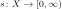
taking finitely many values; writing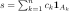
with the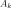
disjoint measurable and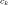
its distinct values, its integral is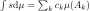
, with the convention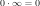
. For measurable ,
,
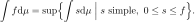
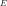
one writes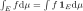
, and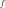
is integrable when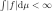
, in which case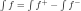
with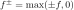
.
For every measurable there are simple functions
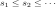
with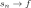
pointwise; the convergence is uniform where is bounded.Put
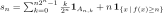
, where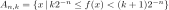
, a measurable set. Each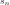
is simple, and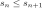
because refining the dyadic grid can only raise the approximation from below. If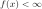
then for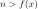
we have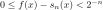
, and if then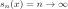
. Where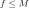
, the bound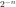
is uniform for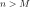
.Let
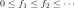
be measurable with pointwise. Then
pointwise. Then 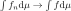
.The integrals increase and are bounded by
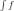
, since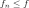
; let be their limit, so .
be their limit, so .
For the converse, fix a simple
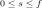
and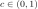
, and put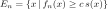
, a measurable set. The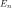
increase, and their union is : where
: where 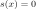
this is clear, and where we have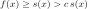
, so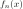
eventually exceeds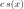
. Now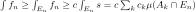
, and by continuity from below each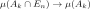
. Letting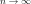
gives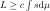
, and then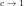
and the supremum over give
give 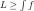
.For measurable
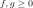
and ,
,
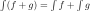
and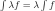
; and implies
implies 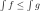
.
For simple functions both identities are finite sums over the common
refinement of the two partitions, using additivity of  on
disjoint sets. In general take increasing simple and
on
disjoint sets. In general take increasing simple and
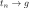
; then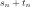
is simple, increases and converges to , so monotone convergence applied three times gives the
additivity. Monotonicity is immediate from the definition as a
supremum, every simple function below being below
, so monotone convergence applied three times gives the
additivity. Monotonicity is immediate from the definition as a
supremum, every simple function below being below  .
.
For measurable , .
Put , measurable and increasing with . By monotone convergence . And for every , so ; taking on both sides gives the claim.
Let be measurable with pointwise and
for a measurable with
. Then is integrable and
; indeed
.
is measurable as a pointwise limit and , so
. The functions
are non-negative, since
, and converge pointwise to
. Fatou's lemma gives
,
using additivity and the finiteness of to split the
integral. Hence , so that integral
tends to  , and
.
, and
.
Domination is what fails in the standard counterexample – the moving
spikes converge pointwise to with
integral  throughout – and Fatou's inequality is exactly what
survives without it. Note also which hypothesis has disappeared compared
with the theorem on integrating a uniform limit: nothing here is
uniform, which is the entire gain.
throughout – and Fatou's inequality is exactly what
survives without it. Note also which hypothesis has disappeared compared
with the theorem on integrating a uniform limit: nothing here is
uniform, which is the entire gain.